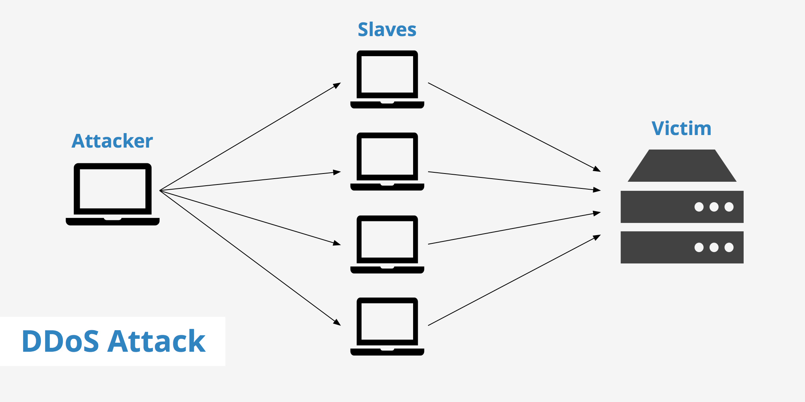

CIBERSEGURIDAD
La ciberseguridad es la práctica de defender las computadoras, los servidores, los dispositivos móviles, los sistemas electrónicos, las redes y los datos de ataques maliciosos. También se conoce como seguridad de tecnología de la información o seguridad de la información electrónica.
¿Que es un ataque Ddos? y como evitarlo.
Los ataques de red distribuidos a menudo se conocen como ataques de denegación distribuida de servicio (DDoS). Este tipo de ataque aprovecha los límites de capacidad específicos que se aplican a cualquier recurso de red, tal como la infraestructura que habilita el sitio web de la empresa. El ataque DDoS envía varias solicitudes al recurso web atacado, con la intención de desbordar la capacidad del sitio web para administrar varias solicitudes y de evitar que este funcione correctamente.
¿Cómo funciona un ataque DDoS?
Los recursos de red (tales como los servidores web) tienen un límite finito de solicitudes que pueden atender al mismo tiempo. Además del límite de capacidad del servidor, el canal que conecta el servidor a Internet tiene un ancho de banda o capacidad limitados. Cuando la cantidad de solicitudes sobrepasa los límites de capacidad de cualquiera de los componentes de la infraestructura, el nivel de servicio probablemente se vea afectado de alguna de las siguientes maneras:
- La respuesta a las solicitudes será mucho más lenta de lo normal.
- Es posible que se ignoren algunas (o todas) las solicitudes de los usuarios.
Por regla general, la intención primordial del atacante es evitar por completo el funcionamiento normal del recurso web, una "denegación" total del servicio. El atacante también puede solicitar un pago para detener el ataque. En algunos casos, el objetivo del ataque DDoS puede ser desacreditar o dañar el negocio de un competidor.

Autor: Lautaro Cuadrado
12/5/22
¿Que es un malware, cuantos tipos hay y como evitarlo?
Un malware, es un programa malicioso o maligno que incluye todos los tipos concebibles de software malicioso. Cuando un malware entra en un dispositivo, el resultado es que el mismo se pone mas lento e incluso puede presentar un daño completo.
- Virus informático: Su objetivo es alterar el funcionamiento del dispositivo. Requiere la interacción de una persona o usuario para propagarse a otros archivos y sistemas.
-
Gusano informático: Este malware tiene como carcaterísticas principal que es capaz de replicarse y «moverse» desde un dispositivo infectado a otros a través de la red. Por ejemplo, este tipo de malware puede provenir de unidades USB infectadas, archivos adjuntos en los correos electrónicos e incluso sitios web.
-
Troyano Este malware se accede al sistema de la víctima como un archivo o aplicación inofensiva y realiza acciones no deseadas en segundo plano. Dependiendo del tipo de troyano, se pueden llevar a cabo diferentes funciones, como el borrado selectivo de archivos del sistema o la descarga de más programas maliciosos.
-
Spyware En este caso, es un programa que espía el dispositivo afectado. Sus funciones son recoger datos e información del dispositivo y observar la actividad del usuario sin su consentimiento. Los canales más usuales de propagación son los correos electrónicos considerados spam o sitios de descargas dudosos.
-
Adware Este software rastrea el navegador y el historial de descargas del usuario con la intención de mostrar anuncios emergentes o banners no deseados para atraer al usuario a realizar una compra o hacer clic . Estos programas suelen entrar en los dispositivos a través de páginas web infectadas o sitios de descarga dudosos.
-
Ransomware: Este malware cifra los archivos del disco duro del dispositivo y restringe el acceso del usuario a ellos. Para poder desbloquear el equipo pide a cambio un pago, generalmente en criptomonedas. Algunos de los casos más conocidos de ransomware son WannaCry y Petya.
¿Como evitarlo?
Instalar un sistema antivirus y medidas adicionales de protección de los equipos informáticos.
- Crear copias de seguridad periódicamente.
- Actualizar constantemente las aplicaciones de los equipos informáticos.
- Establecer un control de acceso al equipo, especialmente en caso de las empresas.
- Crear conciencia y educar a los empleados de los posibles riesgos.
Autor: Mauro Nahuelquir
19/5/22
VERIFICACION EN DOS PASOS ¿QUE ES? ¿COMO FUNCIONA? ¿QUE BENEFICIOS TRAE?
¿Que es?
La verificación en dos pasos es un mecanismo de seguridad diseñado para evitar el acceso no autorizado a las cuentas de diferentes servicios digitales.
Con él, el usuario dispone de una contraseña para verificar su identidad, que se crea de forma temporal y se utiliza una sola vez. En general, este código se distribuye de las siguientes formas:
- Envío de un SMS
- Crear un código a través de una aplicación móvil
- Utilizando un token físico, conectado a través de tecnología USB o NFC. El token físico es un dispositivo de seguridad digital que cada 32 segundos genera un código de seguridad de 6 dígitos que no se repite nunca, para ofrecer protección en transacciones o acceso online a un determinado sitio.
Estos tres métodos permiten al usuario validar su identidad al acceder a servicios como Google, Whatsapp, etc.
Cada vez que se inicia sesión en un dispositivo desconocido, se solicita un nuevo código, como mecanismo de protección frente a ciberataques.
¿Cómo funciona la autenticación de dos factores?
Cuando inicie sesión en su cuenta, se le pedirá que se autentique con su nombre de usuario y contraseña. Este se convierte en su primer factor de autenticación.
Para el segundo factor de autenticación, puede usar un código de acceso de una sola vez o un token de contraseña de un solo uso (OTP), un mensaje de texto con un código de verificación enviado a su número de teléfono personal en el dispositivo móvil (por ejemplo, iPhone, Samsung, Google Pixel), una aplicación móvil especializada para autenticar teléfonos inteligentes como Google Authenticator (iOS y Android), un USB o un llavero (por ejemplo, algo que tenga). Cuando se combina con su nombre de usuario y contraseña, el resultado es una capa de seguridad adicional más fuerte y resistente.
Dar este paso adicional en el proceso de autenticación no solo frustra a los piratas informáticos, sino que también reduce el riesgo de ser víctima de ataques de phishing, fraude y robo de identidad
¿Porque usar la verificacion en dos pasos?
Garantiza la seguridad de los datos de los usuarios es un desafío para muchas empresas. Independientemente de la industria, tienen que lidiar con múltiples amenazas y técnicas de robo de datos.
Garantiza que las políticas de seguridad de datos sean lo suficientemente sólidas como para evitar comprometer el entorno de trabajo.
En este escenario, la autenticación en dos pasos surge como una forma para fortalecer los servicios digitales. A nivel empresarial, permite que solo las personas adecuadas tengan acceso a los sistemas de la empresa, incluso si las cuentas están comprometidas.
Ejemplos de activación de la verificación en dos pasos:
Muchas de las principales aplicaciones que usamos permiten activar este sistema de protección. Vamos a ver cómo hacerlo en algunas de las aplicaciones digitales más utilizadas.
Autor: Benjamin Castro
19/5/22